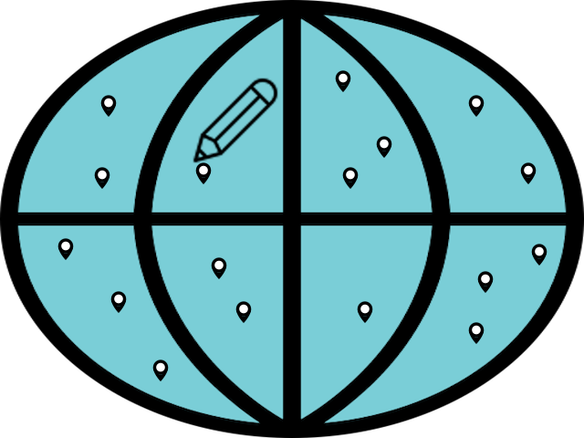
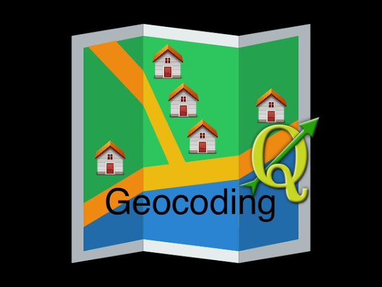

Welcome!
This website contains four tutorials about QGIS, three of these are video based.
The tutorials are:
- Creating new shapefiles and new features
- Geocoding process in QGIS
- Getting Open Street Map data through QGIS
- Converting to GeoJSON in QGIS and GeoJSON.io

